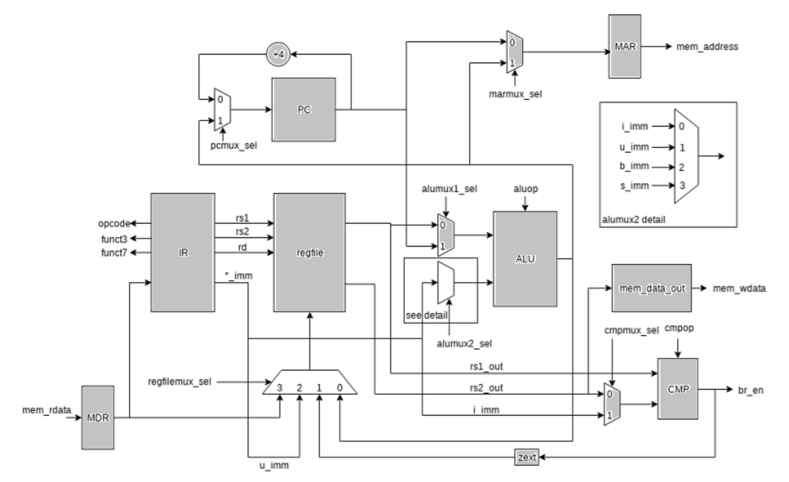

Building a RISC-V Processor: FPGA Implementation and Optimization
Summary
In December 2018, I participated in a group project where we developed a fully functional RISC-V processor from scratch, designed to run on an FPGA. The processor featured a 5-stage pipelined architecture, branch prediction mechanisms, and support for the RV32I instruction set. Our submission achieved a top 5 ranking in a competition focused on optimizing CPU designs for FPGA execution, balancing power and performance.

Processor data path
Key Contributions
- Owned the CPU architecture design, managing the process from decoding operation opcodes to execution.
- Successfully pipelined the CPU with a 5-stage design, which significantly boosted throughput while balancing latency through careful dependency analysis.
- Integrated a Pattern History Table (PHT) to improve branch prediction, reducing misprediction penalties.
- Tested the design with RISC-V Assembly (ASM) test cases, verifying the correctness of input/output behaviors and per-instruction functionality.
- Utilized ModelSim for debugging, tracing clock cycle output signals to individual components to correct bugs and ensure accurate execution.
Key Projects
- Developed a fully functional RISC-V processor running on an FPGA with a 5-stage pipeline for increased throughput.
- Added a branch prediction mechanism using a Pattern History Table (PHT) to further optimize performance.
- Optimized the processor for both power efficiency and high performance, leading to a top 5 finish in the competition.
Challenges
One of the main challenges was implementing the 5-stage pipeline without introducing dependencies that could affect performance. Balancing throughput and latency required detailed analysis of the architecture, and careful handling of hazards between pipeline stages. Debugging the processor using ModelSim to trace issues down to specific components also presented challenges, as any bugs in the CPU design affected clock cycle behavior and output correctness.
Technologies Used
SystemVerilog, Quartus, ModelSim, FPGA, RISC-V, Assembly, Git